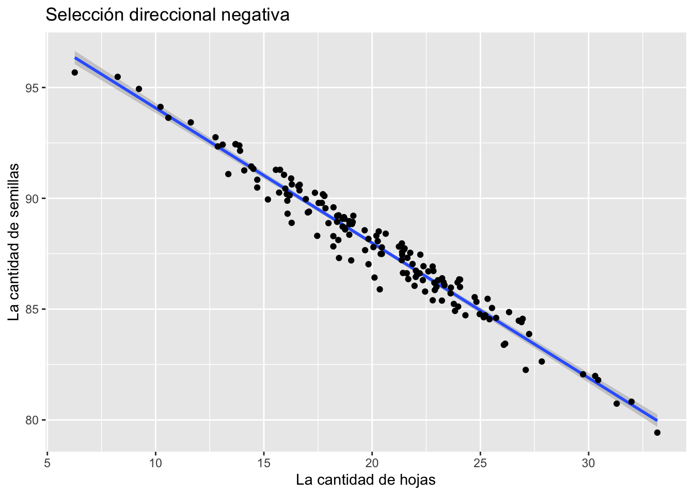

Aptitud_Darwiniana
1/25/2022
Aptitud Darwiniana. (Darwinian Fitness)
En esta sección estaremos evaluando diferentes alternativas para considerar el potencial evolutivo de diferentes especies.
Aquí encontrarán preguntas para ayudar a enfocar el aprendizaje de los conceptos
- ¿Qué es la evolución?
- La evolución es el termino en biología para expresar que los organismos biológicos cambian de genética y morfología en el tiempo. (La palabra evolución no es un sinónimo a selección natural)
- ¿Qué es la selección natural?
La selección natural es uno de dos procesos que llevan a la evolución. Para que puede ocurre la selleción natural se necesita tres condiciones.
- variación morfológica entre individuos
- que la morfología tenga una asociación a la genética (para que sea hereditaria la morfología)
- variación en adecuación entre individuos asociado a unos morfotipos (que los individuos dejan diferentes progenies viables)
- ¿Qué es la deriva genética?
- la deriva genética también es un proceso que puede llevar a la evolución (cambio a través del tiempo). Al contrario de la selección natural, el cambio no es un resultado de adecuación diferencial pero de procesos al azar.
- variación morfológica entre individuos
- que la morfología tenga una asociación a la genética (para que sea hereditaria la morfología)
- ¿Cual son alternativas para evaluar el potencial evolutivo de plantas y animales en el campo?
- El método de mejor valor para medir la selección natural requiere que uno sigue los padres, los, y sus hijos. En otra palabra contabilizar la que los individuos de los padres sean también efectivo a dejar progenies.
- Considera un individuo que produce 1000 semillas y ninguna de estas semillas logra ellos reproducirse, por consecuencia los padres su esfuerzo darwiniana es cero, vs. un individuo produce 10 semillas y 10 de esas semillas produce semillas también, ese padre tuvo un impacto grande en dejar sus genes a la próxima generación.
Métodos matemático para medir la adcuación darwiniana:
vea este enlace para medirla Adecuación
Adecuación Absoluta
La aptitud absoluta (W) de un fenotipo o genotipo se define como el cambio proporcional en la abundancia de ese fenotipo o genotipo durante una generación atribuible a la selección. Por ejemplo, si \(n(t)\) es la abundancia de un genotipo en la generación \(t\) en una población infinitamente grande (para que no haya deriva genética).
\[ n(t + 1) = Wn(t)\] Una aptitud absoluta mayor que 1 indica crecimiento en la abundancia de ese fenotipo o genotipo; una aptitud absoluta menor que 1 indica disminución. Es el cambio en la abundancia de un fenotipo o genotipo.
Adecuación relativa
La adecuación relativa \(w\) determina el cambio en frecuencia de fenotipo o genotipo. Si la población total en la generación \(t\) y la el fenoyipo/genotipo tiene una frecuencia de \[p(t)=\frac{n_t}{N_t},\]
entonces la adecuación de un individuo al comarar con los otros fenotipos/genotipos o individuos es \[w_i=\frac{W_i}{\overline{w}}\]
La aptitud darwiniana (a menudo denotada con el w en los modelos de genética de poblaciones) es la representación cuantitativa de la selección natural y sexual dentro de la biología evolutiva. Puede definirse ya sea con respecto a un genotipo o un fenotipo en un ambiente dado. En cualquier caso, describe el éxito reproductivo individual y es igual a la contribución promedio al acervo genético de la próxima generación que realizan los individuos del genotipo o fenotipo especificado. La aptitud de un genotipo se manifiesta a través de su fenotipo. La aptitud de un fenotipo dado también puede ser diferente en diferentes entornos selectivos.
Con la reproducción asexual, es suficiente asignar aptitudes a los genotipos. Con la reproducción sexual, los genotipos se revuelven cada generación. En este caso, los valores de aptitud se pueden asignar a los alelos promediando los posibles antecedentes genéticos. La selección natural tiende a hacer que los alelos con mayor aptitud sean más comunes con el tiempo, lo que da como resultado la evolución darwiniana.
El término “aptitud darwiniana” se puede utilizar para aclarar la distinción con la aptitud física. La aptitud no incluye una medida de supervivencia o duración de la vida, pero el resultado de dejar progenie a la proxima generación. La conocida frase de Herbert Spencer “supervivencia del más apto” debe interpretarse como: “Supervivencia de la forma (fenotípica o genotípica) que dejará la mayor cantidad de copias de sí misma en generaciones sucesivas”.
Tres modelos de selección natural
Hay tres modelos básicos de selección natural.
- Selección direcional
La selección direcional se refiere que hay una ventaja para los individuos que sean más pequeño o más grande.
library(car)## Loading required package: carDatalibrary(MASS)
library(lmtest)## Loading required package: zoo##
## Attaching package: 'zoo'## The following objects are masked from 'package:base':
##
## as.Date, as.Date.numericlibrary(tseries)## Registered S3 method overwritten by 'quantmod':
## method from
## as.zoo.data.frame zoolibrary(ggfortify)## Loading required package: ggplot2## Warning in register(): Can't find generic `scale_type` in package ggplot2 to
## register S3 method.set.seed(1234)
##Linear Regression
#Generate the independent variable and the error
x1=rnorm(100,50,9)
x2=rnorm(100,200,64)
error=rnorm(100,0,16)
#Generate the dependent variable (b0=150, b1=-4, b2=2.5)
y1=150-(4*x1)+(2.5*x2)+error
#create the model
m1=lm(y1~x1+x2)
summary(m1)##
## Call:
## lm(formula = y1 ~ x1 + x2)
##
## Residuals:
## Min 1Q Median 3Q Max
## -51.093 -10.774 1.696 9.317 44.241
##
## Coefficients:
## Estimate Std. Error t value Pr(>|t|)
## (Intercept) 141.04453 9.80621 14.38 <2e-16 ***
## x1 -3.85686 0.17125 -22.52 <2e-16 ***
## x2 2.52208 0.02343 107.63 <2e-16 ***
## ---
## Signif. codes: 0 '***' 0.001 '**' 0.01 '*' 0.05 '.' 0.1 ' ' 1
##
## Residual standard error: 15.4 on 97 degrees of freedom
## Multiple R-squared: 0.9921, Adjusted R-squared: 0.992
## F-statistic: 6111 on 2 and 97 DF, p-value: < 2.2e-16autoplot(m1)
df=data.frame(y1, x1, x2)
df## y1 x1 x2
## 1 567.541762 39.13641 226.52951
## 2 375.205892 52.49686 169.61802
## 3 424.487299 59.75997 204.22358
## 4 465.260408 28.88872 167.84142
## 5 307.378634 53.86212 147.13609
## 6 470.667670 54.55450 210.68731
## 7 356.767716 44.82734 142.63906
## 8 514.386214 45.08031 210.76386
## 9 527.637817 44.91993 222.71797
## 10 455.873360 41.98966 196.66527
## 11 442.518323 45.70527 187.46018
## 12 375.686988 41.01452 158.45954
## 13 324.278273 43.01371 128.97490
## 14 557.850060 50.58013 254.35355
## 15 412.384189 58.63545 201.43120
## 16 593.704911 49.00743 253.19300
## 17 266.882501 45.40091 120.36558
## 18 500.148843 41.79924 210.81769
## 19 582.969252 42.46545 243.08264
## 20 368.898291 71.74252 198.31831
## 21 428.872829 51.20679 187.75090
## 22 353.123031 45.58383 149.95797
## 23 831.541378 46.03507 331.72237
## 24 572.310974 54.13630 248.03209
## 25 771.450613 43.75652 316.74933
## 26 504.388598 36.96616 205.12382
## 27 374.989548 55.17280 159.58980
## 28 255.564155 40.78710 103.14956
## 29 337.819880 49.86376 159.28961
## 30 522.886268 41.57646 214.48330
## 31 567.317451 59.92068 264.87618
## 32 503.166105 45.71966 216.17601
## 33 273.092058 43.61504 124.99531
## 34 576.909108 45.48868 242.79772
## 35 249.737779 35.33816 94.39354
## 36 416.257260 39.49143 176.58546
## 37 426.172061 30.37964 179.76843
## 38 182.478393 37.93106 75.31225
## 39 608.276068 47.35136 258.88368
## 40 376.621237 45.80692 160.13622
## 41 345.318433 63.04547 178.62165
## 42 718.309183 40.38222 289.28947
## 43 565.096678 42.30172 240.74716
## 44 454.132161 47.47439 193.06037
## 45 579.500507 41.05094 232.88082
## 46 552.776422 41.28337 225.55340
## 47 777.636878 40.03414 306.42281
## 48 545.685932 38.73213 217.65718
## 49 554.091260 45.28555 232.40145
## 50 527.783617 45.52835 222.24333
## 51 461.649991 33.74572 175.85679
## 52 503.535830 44.76132 206.24765
## 53 759.354216 40.01999 304.87966
## 54 357.055014 40.86534 143.96208
## 55 457.142766 48.53921 207.79264
## 56 641.742936 55.06750 287.17636
## 57 376.770711 64.83036 184.98425
## 58 289.717014 43.03982 132.58350
## 59 257.150971 64.45319 144.33385
## 60 435.740828 39.57972 175.03187
## 61 306.399657 55.90930 145.76960
## 62 310.951991 72.94092 183.31908
## 63 387.482228 49.68716 173.47714
## 64 416.606600 43.97330 188.28475
## 65 520.820284 49.93156 226.05159
## 66 475.301220 65.99376 239.97652
## 67 755.684452 39.75253 307.40517
## 68 370.762992 62.31044 195.60361
## 69 356.960247 61.96608 179.46625
## 70 683.913166 53.02826 294.14437
## 71 717.570739 50.06204 309.07708
## 72 502.516098 45.90078 202.76762
## 73 420.698640 46.70128 178.70993
## 74 150.282138 55.83458 83.37693
## 75 634.062681 68.63244 290.32079
## 76 311.091336 48.61941 146.39472
## 77 333.201095 37.48369 128.07918
## 78 978.836776 43.48776 394.80102
## 79 478.207253 52.32436 215.04136
## 80 461.197588 47.14647 197.87145
## 81 3.056164 48.39989 25.13795
## 82 447.675973 48.47005 193.61340
## 83 644.352420 37.64928 262.46603
## 84 535.494290 48.43592 226.48761
## 85 552.380292 57.65209 258.38862
## 86 747.393598 56.27848 326.95886
## 87 603.713095 54.94998 274.82294
## 88 379.168218 46.37541 167.44083
## 89 544.720460 48.27566 245.06753
## 90 463.311344 39.24925 187.30136
## 91 381.589485 49.52157 165.56347
## 92 -13.176480 52.29676 17.23145
## 93 233.982132 65.35368 149.46260
## 94 482.067325 59.01362 231.22014
## 95 841.222899 45.53975 338.75408
## 96 546.268214 53.19995 232.04446
## 97 571.278934 39.78853 239.69345
## 98 257.972904 57.90383 138.18219
## 99 446.657757 58.75625 210.40990
## 100 46.228277 69.09005 66.99280library(tidyverse)## ── Attaching packages ─────────────────────────────────────── tidyverse 1.3.1 ──## ✓ tibble 3.1.6 ✓ dplyr 1.0.7
## ✓ tidyr 1.1.4 ✓ stringr 1.4.0
## ✓ readr 2.1.1 ✓ forcats 0.5.1
## ✓ purrr 0.3.4## ── Conflicts ────────────────────────────────────────── tidyverse_conflicts() ──
## x dplyr::filter() masks stats::filter()
## x dplyr::lag() masks stats::lag()
## x dplyr::recode() masks car::recode()
## x dplyr::select() masks MASS::select()
## x purrr::some() masks car::some()ggplot(df, aes(x1, y1))+
geom_smooth(method = lm)+
geom_point()## `geom_smooth()` using formula 'y ~ x'set.seed(5840) # this makes the example exactly reproducible
N <- 150
x <- rnorm(N, 20, 5)
beta <- 0.4
errors <- rweibull(N, shape=1.5, scale=1)
# errors <- -1*errors # this makes them left skewed
errors <- errors - factorial(1/1.5) # this centers the error distribution on 0
y <- 1 + x*beta + errors
beta2 <- 0.6
y2 <- 1-x*beta2 - errors
df2=data.frame(x, y)
df2## x y
## 1 21.866978 9.591435
## 2 27.094235 13.323471
## 3 31.981610 13.780202
## 4 16.189315 7.628968
## 5 22.079043 10.028636
## 6 16.292818 7.114640
## 7 16.655192 7.057897
## 8 22.795600 9.517514
## 9 23.223563 10.971182
## 10 17.726311 7.270971
## 11 17.796875 7.332958
## 12 24.967607 11.231952
## 13 30.439854 13.112156
## 14 17.678885 7.672976
## 15 14.692302 7.575166
## 16 21.499981 8.959173
## 17 18.214898 7.764306
## 18 18.208094 9.527614
## 19 26.899104 11.205258
## 20 19.830202 8.865212
## 21 16.588278 7.129879
## 22 24.063395 9.853789
## 23 23.772993 11.009951
## 24 15.930416 6.754298
## 25 18.384290 8.115677
## 26 22.022721 9.861504
## 27 13.866863 5.842808
## 28 21.237129 8.930897
## 29 23.622973 10.563388
## 30 18.439531 9.192831
## 31 25.224749 11.236570
## 32 29.742788 12.992647
## 33 18.940799 8.241872
## 34 13.900544 6.074421
## 35 17.983253 8.522967
## 36 23.945276 10.007790
## 37 23.973029 11.091753
## 38 18.729432 8.599183
## 39 17.028648 8.231176
## 40 17.358281 7.277745
## 41 24.059666 10.189434
## 42 18.952807 8.377760
## 43 33.172466 14.938216
## 44 16.260137 6.852213
## 45 20.396596 9.426760
## 46 18.382213 8.384504
## 47 27.251193 11.673069
## 48 22.445938 10.718480
## 49 21.958728 10.557035
## 50 18.634305 8.199372
## 51 23.232379 9.961942
## 52 22.371138 9.589149
## 53 25.419501 11.372107
## 54 24.735142 10.513754
## 55 21.759826 9.106168
## 56 6.264113 4.069788
## 57 21.384233 9.155639
## 58 20.448701 9.122904
## 59 22.874725 10.237320
## 60 19.103062 8.248149
## 61 26.145770 12.331008
## 62 15.747628 6.563184
## 63 31.296569 14.005416
## 64 23.343261 10.252044
## 65 22.340745 10.225614
## 66 14.419058 6.678690
## 67 20.110571 10.553669
## 68 13.097140 5.957947
## 69 14.694852 7.222555
## 70 15.702982 7.600456
## 71 21.599109 10.061438
## 72 25.153084 11.336331
## 73 20.449334 9.417791
## 74 22.595374 9.777466
## 75 17.528613 7.702926
## 76 21.373989 8.760797
## 77 18.700505 8.111845
## 78 22.894845 10.560292
## 79 22.196930 9.944152
## 80 30.301288 12.955555
## 81 26.324444 10.870947
## 82 23.638568 10.301191
## 83 10.588805 5.248796
## 84 16.083107 7.890559
## 85 27.835567 12.797618
## 86 20.305861 8.432361
## 87 26.772529 11.168645
## 88 19.675625 9.405956
## 89 12.873409 6.084035
## 90 22.798909 11.041899
## 91 21.668803 10.310890
## 92 18.695044 8.117481
## 93 18.635134 8.550302
## 94 21.479629 9.004643
## 95 16.282543 8.850746
## 96 25.333330 10.469465
## 97 15.990083 7.364655
## 98 21.422321 10.084396
## 99 26.953413 11.047781
## 100 16.937718 7.647082
## 101 22.225562 9.097735
## 102 19.070870 8.344450
## 103 16.644553 7.312176
## 104 13.357603 7.234762
## 105 15.554106 6.604490
## 106 25.727845 11.250723
## 107 8.246929 3.869023
## 108 19.033748 9.994073
## 109 20.060210 9.191769
## 110 22.970728 10.401342
## 111 22.831697 9.711884
## 112 24.308548 11.415572
## 113 16.093297 8.475430
## 114 25.535755 10.841589
## 115 13.697168 5.814198
## 116 12.765631 5.692989
## 117 18.944732 8.853704
## 118 9.227930 4.217923
## 119 21.366752 9.515390
## 120 20.626158 8.470811
## 121 20.258978 8.882043
## 122 18.208514 9.065163
## 123 23.828595 11.316074
## 124 18.727598 8.178430
## 125 17.463846 9.200999
## 126 11.623220 5.248936
## 127 10.225438 4.830989
## 128 21.627937 9.361412
## 129 24.021623 9.852439
## 130 19.131495 7.961237
## 131 17.844897 7.879584
## 132 20.196625 8.649087
## 133 19.832480 10.006186
## 134 22.015225 10.145470
## 135 18.448352 8.076130
## 136 14.093224 6.923625
## 137 15.185838 8.014607
## 138 19.654641 8.510791
## 139 23.039086 10.088697
## 140 26.083249 12.394538
## 141 14.515413 6.765836
## 142 23.299892 10.132260
## 143 17.083100 8.186108
## 144 13.685939 5.822987
## 145 16.058873 7.599441
## 146 18.755699 8.654566
## 147 21.388413 9.272690
## 148 24.817775 10.704747
## 149 20.354113 11.036277
## 150 18.469402 9.998424ggplot(df2, aes(x, y2))+
geom_smooth(method = lm)+
geom_point()+
labs(x="La cantidad de hojas", y="La cantidad de semillas")+
ggtitle("Selección direccional positiva")## `geom_smooth()` using formula 'y ~ x'
- Selección estabilizadora
La selección estabilizadora es que hay ventaja evolutiva para los individuos que estén en el centro y no los valores más pequeños y más grande.
d<-seq(from=0, to=30, by=0.1)
y<-500-0.5*(d-10)^2
variación <- rnorm(length(d), mean=10, sd=5)
var.y <- y + variación
df4=tibble(y, var.y, d)
df4## # A tibble: 301 × 3
## y var.y d
## <dbl> <dbl> <dbl>
## 1 450 465. 0
## 2 451. 455. 0.1
## 3 452. 462. 0.2
## 4 453. 465. 0.3
## 5 454. 464. 0.4
## 6 455. 459. 0.5
## 7 456. 459. 0.6
## 8 457. 463. 0.7
## 9 458. 456. 0.8
## 10 459. 471. 0.9
## # … with 291 more rowsggplot(df4, aes(d, var.y)) +
geom_point(color ="blue", size=2) +
stat_smooth(method = "lm", formula = y ~ poly(x,2),
color ="red", se =TRUE, size = 1)
- Selección disruptiva.
La selección disruptiva es que son los individuos más pequeños y más grande que tienen ventaja y no los del centro de la distribución.
d<-seq(from=0, to=30, by=0.1)
y<-500+0.5*(d-10)^2
variación <- rnorm(length(d), mean=10, sd=10)
var.y <- y + variación
df4=tibble(y, var.y, d)
df4## # A tibble: 301 × 3
## y var.y d
## <dbl> <dbl> <dbl>
## 1 550 584. 0
## 2 549. 545. 0.1
## 3 548. 552. 0.2
## 4 547. 553. 0.3
## 5 546. 554. 0.4
## 6 545. 557. 0.5
## 7 544. 583. 0.6
## 8 543. 543. 0.7
## 9 542. 532. 0.8
## 10 541. 538. 0.9
## # … with 291 more rowsggplot(df4, aes(d, var.y)) +
geom_point(color ="blue", size=2) +
stat_smooth(method = "lm", formula = y ~ poly(x,2),
color ="red", se =TRUE, size = 1)Medir la aptitud relativa de los individuos:
Los Datos
- Por lo menos una variable continua (la variable en x, independiende)
- Un indice de adecuación fitness (número de frutos, tiempo de vida, tamaño de las crias, supervivencia, etc)
- Calcular el promedio de fitness de todo los individuos
- Dividir el #3 por el promedio (esto sera su Aptitud Darwiniana relativa)
Aquí esta los datos
library(readxl)
library(gt)
Example_Aptitud_Darwiniana <- read_excel("Example_Aptitud_Darwiniana.xlsx")
gt(head(Example_Aptitud_Darwiniana)) #Usar head() para ver los datos| Variable_Continua | Esfuerzo_Reproductivo | W_Aptitud_Darwiniana |
|---|---|---|
| 1.1 | 10 | 1.20 |
| 2.0 | 8 | 0.96 |
| 3.3 | 5 | 0.60 |
| 1.6 | 12 | 1.44 |
| 2.3 | 4 | 0.48 |
| 1.9 | 11 | 1.32 |
Los scripts para calcular la ultima columna si no la ha calculado anteriormente
# calcular el promedio del Esfuerzo_Reproductivo
promedio=mean(Example_Aptitud_Darwiniana$Esfuerzo_Reproductivo, na.rm = TRUE)
promedio # en promedio cada individuo tiene x numero de Esfurzo reproductive## [1] 8.333333# AHORA crear una nueva columna con W_Aptitud
Example_Aptitud_Darwiniana$W_Aptitud=Example_Aptitud_Darwiniana$Esfuerzo_Reproductivo/promedio
# vea los datos
head(Example_Aptitud_Darwiniana)## # A tibble: 6 × 4
## Variable_Continua Esfuerzo_Reproductivo W_Aptitud_Darwiniana W_Aptitud
## <dbl> <dbl> <dbl> <dbl>
## 1 1.1 10 1.2 1.2
## 2 2 8 0.96 0.96
## 3 3.3 5 0.6 0.6
## 4 1.6 12 1.44 1.44
## 5 2.3 4 0.48 0.48
## 6 1.9 11 1.32 1.32Regresión lineal simple
library(ggplot2)
ggplot(Example_Aptitud_Darwiniana, aes(Variable_Continua, W_Aptitud))+
geom_point() + # poner los puntos
geom_smooth(method=lm) # poner una regresion lineal## `geom_smooth()` using formula 'y ~ x' ### Prueba de si la selección es significativa
### Prueba de si la selección es significativa
model1=lm(W_Aptitud~Variable_Continua, data=Example_Aptitud_Darwiniana)
summary(model1)##
## Call:
## lm(formula = W_Aptitud ~ Variable_Continua, data = Example_Aptitud_Darwiniana)
##
## Residuals:
## 1 2 3 4 5 6
## -0.16068 -0.05288 0.08949 0.27254 -0.41695 0.26847
##
## Coefficients:
## Estimate Std. Error t value Pr(>|t|)
## (Intercept) 1.7858 0.3858 4.629 0.00981 **
## Variable_Continua -0.3864 0.1800 -2.147 0.09832 .
## ---
## Signif. codes: 0 '***' 0.001 '**' 0.01 '*' 0.05 '.' 0.1 ' ' 1
##
## Residual standard error: 0.2987 on 4 degrees of freedom
## Multiple R-squared: 0.5354, Adjusted R-squared: 0.4192
## F-statistic: 4.609 on 1 and 4 DF, p-value: 0.09832Regresión cuadratura
Nota aqui que en geom_smooth se añade el polinomio que uno quiere en este caso cuadratico formula=y~poly(x,2)
ggplot(Example_Aptitud_Darwiniana,aes(x=Variable_Continua)) +
geom_point(aes(y = W_Aptitud), shape = 16) +
stat_smooth(aes(y = W_Aptitud),method = "lm", formula = y ~ x + I(x^2), size = 1)model2=lm(W_Aptitud~Variable_Continua+I(Variable_Continua^2), data=Example_Aptitud_Darwiniana)
summary(model2)##
## Call:
## lm(formula = W_Aptitud ~ Variable_Continua + I(Variable_Continua^2),
## data = Example_Aptitud_Darwiniana)
##
## Residuals:
## 1 2 3 4 5 6
## -0.17543 -0.04473 0.07821 0.27418 -0.40778 0.27555
##
## Coefficients:
## Estimate Std. Error t value Pr(>|t|)
## (Intercept) 1.86890 1.30211 1.435 0.247
## Variable_Continua -0.46880 1.22994 -0.381 0.728
## I(Variable_Continua^2) 0.01836 0.27024 0.068 0.950
##
## Residual standard error: 0.3446 on 3 degrees of freedom
## Multiple R-squared: 0.5361, Adjusted R-squared: 0.2268
## F-statistic: 1.733 on 2 and 3 DF, p-value: 0.316